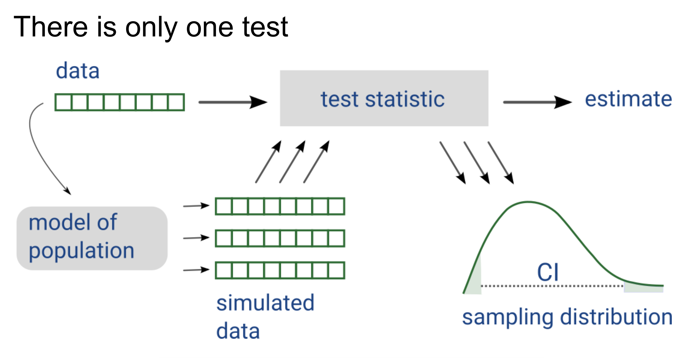

Welcome back to another week of [VS]Codes! A few weeks ago, I had the opportunity to attend posit::conf 2024, a national data science conference organized annually by Posit, PBC. This year, the conference was held in my home base of Seattle, and it was a wonderful experience getting to attend so many inspiring talks and meet so many members of the data science community. This blog post will summarize content from the workshop I attended on the first day of the conference, as well as some of the talks that I attended over the following couple of days. I’ll conclude this post with my personal overall takeaways from the conference.
“Package Development: The Rest of the Owl” - Jenny Bryan
The title of this talk was inspired by this blog post, and serves to explain how one goes from the basics of creating a new package in R to fleshing out a more complete data product.
The key package this workshop highlighted was devtools: you can learn more about this package here.
The first thing you should always do when starting to develop a new package is to call library(devtools). You can also force yourself to do this by including the line require(devtools) in your .Rprofile. With devtools loaded, you can call dev_sitrep() and git_sitrep() to get package development and git/GitHub ‘situation reports’ respectively as you work on your package.
When you call the library command in R, your code will go from installed packages to memory. On the other hand, calling the load_all() function from devtools will go through the entire process from source to memory. This includes the following steps:
simulates building, installing, and attaching your package
makes all of the functions in your package available to use
makes anything you’ve imported available to use
allows fast iteration of editing and test-driving your functions.
As you write code, it is also helpful to call the check() function often to ensure that you are not breaking things as you develop. Your workflow for writing and testing code in your package should emulate the following process:
Another thing that folks don’t really consider when developing packages is that GitHub code search is your friend. You can check out https://github.com/cran on GitHub - as packages get uploaded to CRAN, this user mirrors the full source code for the package onto GitHub for you. The same thing applies for https://github.com/tidyverse and https://github.com/r-lib.
Regarding testing - when you are working on package development, most of your time will be spent looking at test files. For testing within the devtools framework, we call use_testthat(). Then we can run test_file() on a test R script that we’ve generated. A good workflow for macro-iteration across all files is to call test() followed by test_coverage() and finally followed by check(). Always aim to make tests self-sufficient and self-contained. It is better to repeat code than to introduce dependencies across tests. Don’t include library() or source() calls in your test files - include these in helper files instead.
Lastly, with respect to documentation - help topics are saved in .Rd files and will live in the man/ folder of your R package. You can build a README.md file from your README.Rmd using the build_readme() function. It is also helpful to insert a roxygen skeleton into your code.
The following figure offers a good summary of how to approach package development with devtools:
“Keynote Session: Updates from Posit” - Hadley Wickham
The company that organized this conference, formerly known as RStudio, is now known as Posit, PBC. But what is a PBC? PBC stands for “positive benefit corporation.” PBC’s sit between charities and full for-profit corporations. The mission of Posit is to create free and open source software for data science, scientific research, and technical communication. Posit supports both free and commercial tools - the free tools are meant to allow anyone to do data science work. The commercial tools are intended for larger organizations that apply Posit’s tooling at large.
“GitHub: How To Tell Your Professional Story” - Abigail Haddad
GitHub doesn’t just have to be a way for you to version control your code - it can be a platform for showcasing the work that you care about. You can update the README file for the repo that has the same name as your GitHub username to be able to provide an introduction to your GitHub page. Make sure to also pin repositories to your profile that can showcase your skillset in the right way.
*Note: I went ahead and did this right after Abigail’s talk. You can check out the result here :)
“Oops, I’m A Manager - Finding your Minimal Viable Process” - Andrew Holz
What’s the minimal viable process (MVP) to being a manager? Let’s break these terms down with some layman’s definitions:
P(rocess): how sh*t gets done!
V(iable): someone is paying the bills, so they expect the process to be meaningful.
M(inimal): heavy processes don’t promote progress - they paralyze it. Keep the process as lean as possible.
We can distill this process into three phases: gather, do, and deliver
- Gather
- Intentionally consider all stakeholders and the level of input they can and should provide
- Specify as much detail as the team needs, and no more (see https://tidyfirst.substack.com/p/responsible-slack)
- Do
- Make sure you leave as much space as possible for the ‘who,’ ‘what,’ and ‘how’
- Don’t make one person do the same thing over and over again. Also avoid dictating how they go about doing their tasks.
- Lastly, be careful when you set up meetings - consider purpose and frequency as well as who needs to be there.
- 8 people in a meeting is too much - everyone will just be waiting for their turn to speak instead of actively communicating. A 4-person meeting is much better. The best kind of meeting? Context pairs where two individuals are fully aware of the context of their discussion.
- Delivery
- Beyond shipping your product, other aspects of delivery are often neglected. First, delivering your product involves being able to tell a coherent story with your stakeholders. Second, make sure that your entire team gets credit for its wins. Finally, do your best to own your mistakes.
Ultimately, being a good manager is a process of trial and error. There is no “right” process - there is only the “right NOW” process. Observe and reflect along with your team, and make changes to your process over time.
Some notes from Lightning Talks - Eric Leung, Ben Arancibia, Claire Bai, Luis D. Verde Arregoitia, Mika Braginsky, Andrew Gard
- When you’re faced with a new challenging task, don’t reinvent the wheel! Use the best (available) tool for the job
- Companies like COTA Healthcare are developing R packages like
rwnavigatorto facilitate outcomes analysis for cancer. The goal of such tasks is to incorporate medical expertise from oncologists and functionality to standardize and simplify code. - The ALARM project has developed an R package called “fifty-states” to simulate alternative congressional redistricting plans for all 50 states. You can learn more about their package here.
- Documenting your code… comment next to the packages you call and also comment above individual steps. Comment as little and as clearly as possible. Automate informative comments by leveraging built-in descriptions, checking code for package components, and examining comments in code.
- Datapages are a great tool for findable, accessible, interoperable, reusable (FAIR), and interactive data sharing. Uploading a static
.csvfile is easy for you but hard for the audience. On the other hand, making a custom repository and website is easy for the audience but hard for you. Sharing a datapage gives you the best of both worlds and makes it easy to share your data analysis in a robust manner while communicating its impact to your audience. - Learning in the age of AI… even if we don’t need to code ourselves in the future, we need to have the right vocabulary to be able to tell the AI what to do. Instead of telling students what they should implement, have them analyze AI output and figure out what didn’t work and why it is missing.
- Check out the TV show The Expanse!
“Please Let Me Merge Before I Start Crying: And Other Things I’ve Said at the Git Terminal” - Meghan Harris
Git is not the same as GitHub. Git is the version control system, while GitHub is the developer platform that uses the Git software. R users can interact with Git through:
a command-line interface (CLI)
the RStudio graphical user interface (GUI)
a third-party UI (e.g. GitHub Desktop)
Merging in git involves the joining of two or more development histories (also known as branches) together. Merging allows you to safely modify work when collaborating with others. A lot of people think they are scared of merges… the truth is, they’re really scared of merge conflicts! Merge conflicts occur when competing changes are made to the same line of a file (a content conflict) or someone edits a file and someone else deletes the file (a structure conflict).
Here are some tips to dealing with merge conflicts:
1. Don’t panic! You can use git merge --abort like a time machine to get you to where you were before. REmember, you are in control. You can choose which code to use.
2. Assess the damage. You can call git status to see what has happened. Don’t be scared, but be careful. It doesn’t matter how complicated the conflict is… the process is the same.
Remember, merge conflicts are not git problems. They are communication, workflow, or knowledge gap problems. When you are working, be thoughtful before, during, and after your coding sessions.
- Before you code: check your git environment and check the branch status. Always pull first before touching anything. Emergencies are not real!
- While you code: commit often, push thoughtfully, and use git stashes when needed.
- After you code: you are reviewer #1! Make your code as clear as can be.
With respect to learning how to get better with git… do what you need to do, however you need to do it. Sometimes, all you really need is a bit more practice.
“Keynote Session: A Future of Data Science” - Allen Downey
What does it mean for data work to be successful? It means that we have successfully answered a question of interest. Now how do we go about answering a question? We need the following things:
data
a simple method / basic visualization
free software and tools for reliable science
a distribution system (e.g. a blog)

Data science involves the application of tools and processes to answer questions, resolve disagreements, and make better decisions. Data science has been on the Gartner hype cycle for a while… where are we today with respect to this cycle for data science? The peak of inflated expectations happened around 2009 to 2012, while the trough of disillusionment happened from 2016 to 2018. Now, we’re starting to hit the plateau of productivity… and the reason for this is because we have not fully embraced computational statistics.
What is the difference between mathematical statistics and computational statistics? Mathematical statistics can be thought of as the start of the field, while computational statistics can be considered its final evolution. Data science as a field exists because statistics missed the boat on computers. Topics like general purpose programming languages, machine learning, and more were not introduced into the statistical discipline early on enough.
Nevertheless, there are many reasons to be optimistic about the progression of statistics and data science. Not only do we have more and more available data, but we also have improved data literacy. However, data bias from the increased consumption of negative media is skewing the trajectory of data science progress downward. Ultimately, data itself is the antidote to this negativity bias. We can use data to understand the world better, so that we know how to make the world better! This is the ultimate benefit of open data!
“Uniquely Human: Data Storytelling in the Age of AI” - Laura Gast
You have to speak for the data! The data will NOT speak for itself. You can do this with the four following modes of persuasion:
Logos (logic): data and methods
Ethos (trust): credibility
Pathos (emotion): narrative
Kairos (time): audience and timing
Context feeds story. Story feeds impact. Context includes the following three components: background, framing, and circumstance. Make sure to contextualize both the inputs and the outputs of your data story. Data visualization can be used to communicate scale of impact.
Story includes both an arc and a narrative. A story provides your audience with access. Your audience is not passive - you want them to be excited and rooting for the outcome of your analysis. At the same time, you must be careful in a world where “great stories” and things that aren’t true aren’t really the same thing. You want to make sure that you do not lose credibility.
Regarding impact: data is not information, information is not knowledge, and knowledge is not wisdom. Data does not act, and AI does not have intent. It thus becomes evident that humans cannot be cut out of the process. Remember that you will always have to speak for the data through context, story, and impact.
Personal Takeaways
I had a great time at my first posit::conf, and I look forward to attending more in the future. Here are a few key takeaways related to trends in the field of data science as well as ways that I could update my personal workflows:
In the coming years, with platforms like Positron and Quarto Live, we will see expanded ways that people can learn and practice data science across languages and disciplines.
GitHub should be used not just as a version control platform but as a way to share your projects with the public, as well as to learn from other people’s work. Learn how to use GitHub code search!
DuckDB (and duckplyr) is a simple and highly effective way of storing and manipulating data tables. Stop using
.csv’s!Generative AI tools like ChatGPT aren’t the end-all, be-all to data science work, but they can be extremely helpful tools for implementing new tools that have a high learning curve (e.g. CSS)
Learning new concepts can be a challenging task, particularly when there are multiple ways to do a single thing. It’s often easiest to pick a single way of doing things and master it. Go with what works for you!
Regardless of how the field of AI continues to progress (whether the hype grows or shrinks), people will remain at the heart of data science. It is our responsibility as ethical data scientists to promote open sharing of data and tools, as well as to advocate for the data and tell the stories we wish to tell when communicating with stakeholders who are not as data literate.
Nothing is ever really an emergency. If someone’s life is on the line, then you can worry. Otherwise, there’s no need for you to stress as much as you currently are!
This concludes my summary of my experience at posit::conf 2024! I’d like to give a huge thank you to Posit for bringing not just the national but also international data science community together in such a fun, educational event. Until next time, [VS]Coders!